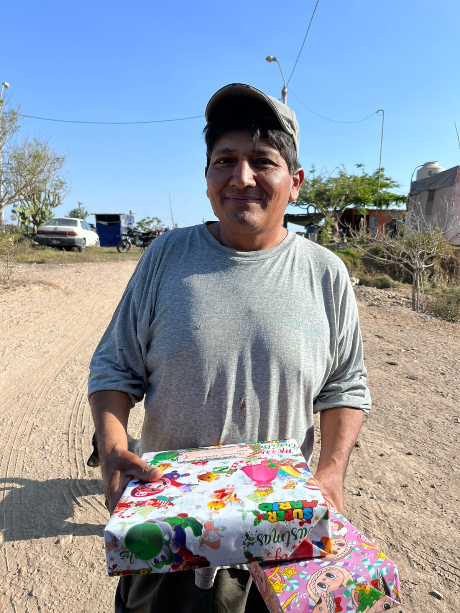

Somos un grupo de jóvenes de Cañete comprometidos con nuestra comunidad. Creemos en el poder del trabajo en equipo para generar un cambio real en la vida de quienes más lo necesitan.
"Porque cada niño y niña merece un futuro lleno de oportunidades, educación, amor y esperanza. ¡Juntos construimos un mejor mañana!"Únete


Organizamos colectas de alimentos, ropa y útiles escolares para familias en situación de vulnerabilidad.

Brindamos asistencia directa a personas y familias que necesitan una mano.

Realizamos eventos para recaudar fondos y visibilizar las necesidades de nuestra comunidad.
Enterate de lo que estamos haciendo en la comunidad.

Organizamos una pollada para recaudar fondos y seguir apoyando a las familias más vulnerables de Cañete.
Leer más
Realizamos una rifa para financiar nuestras actividades solidarias en la comunidad de Cañete.
Leer más
Visitamos el CC. PP. La Quebrada compartiendo momentos maravillosos con niños y personas de la tercera edad.
Leer másResolvemos tus dudas sobre nuestra labor social.
Completa el formulario en la sección de voluntariado. Nos ponemos en contacto para coordinar una reunión de bienvenida.
Organizamos colectas de alimentos, útiles y ropa, visitas a familias en situación vulnerable, y eventos solidarios para recaudar fondos.
No. Solo necesitás ganas de ayudar, responsabilidad y compromiso. Nosotros te orientamos en todo momento.
Las actividades varían según el mes. Generalmente hay al menos una acción solidaria por mes, con convocatorias previas por nuestros canales.
Puedes contactarnos por email y te indicamos cómo hacer llegar tu donación de alimentos, ropa o dinero.
"Llevar felicidad a los que más lo necesiten"
Somos una familia comprometida con nuestra comunidad. Solo pedimos gente con ganas de hacer el bien.
Cumplir con los compromisos del grupo.
Involucrarse de corazón en cada acción.
Disponibilidad para participar en actividades.